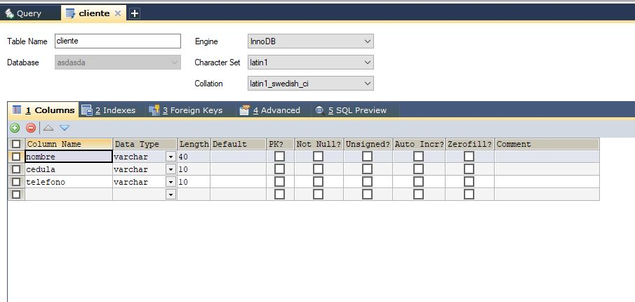
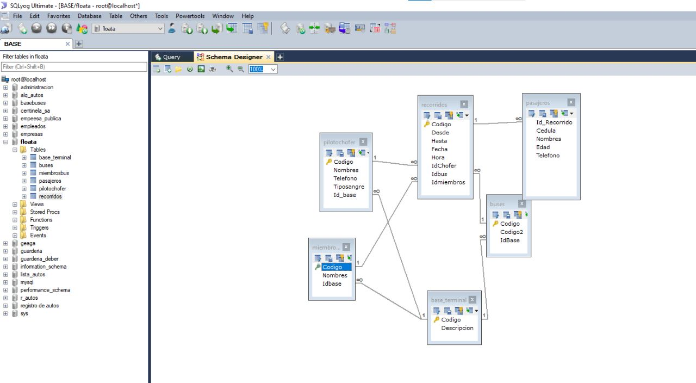
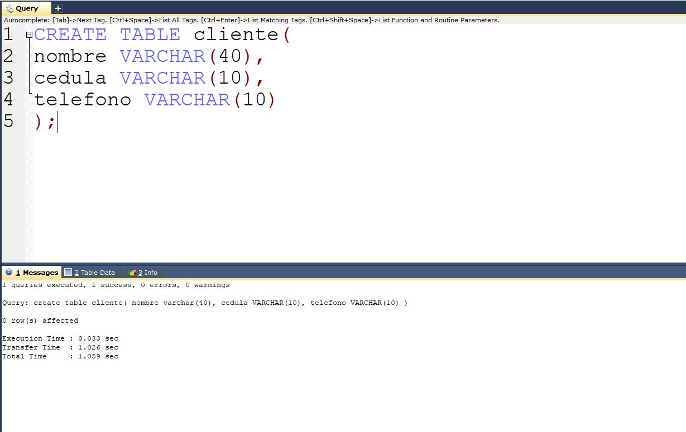
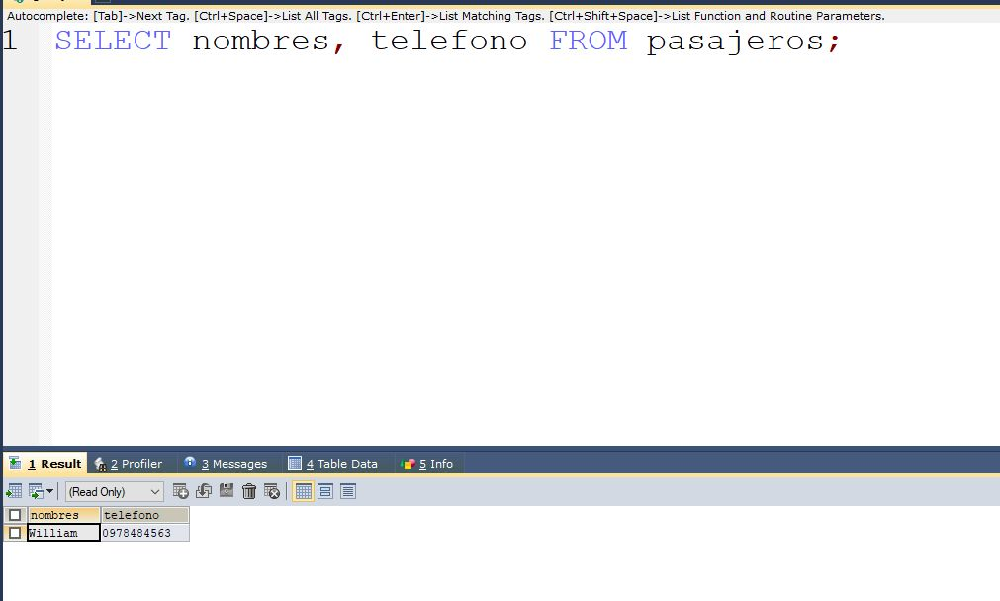
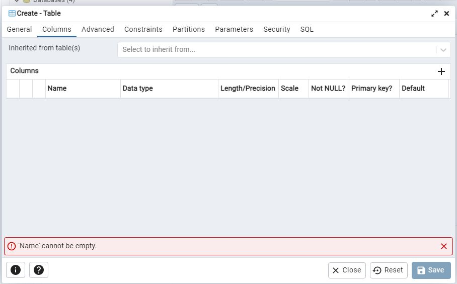
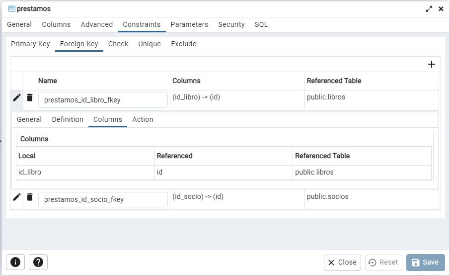
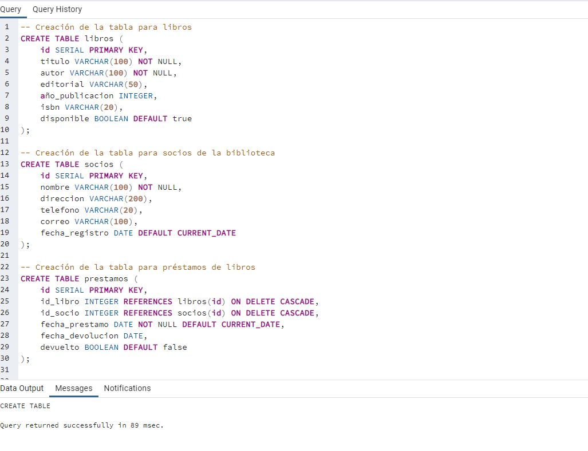
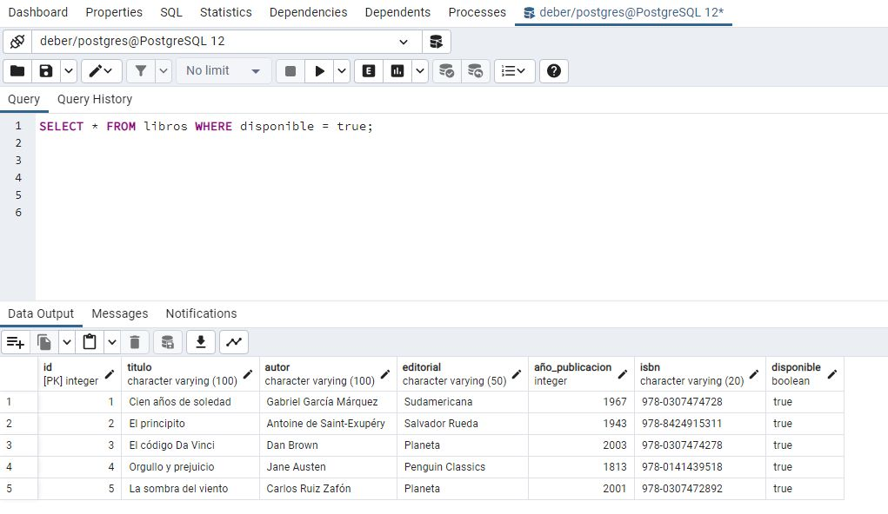

ORÍGENES DE LAS BASES DE DATOS
Los orígenes de las bases de datos se remontan a la década de 1960 y están estrechamente relacionados con el desarrollo de la informática y el almacenamiento de datos electrónicos. Antes del concepto de bases de datos, la información se almacenaba principalmente en archivos físicos y sistemas de gestión de archivos que eran limitados y poco flexibles.
COMO FUNCIONAN LAS BASES DE DATOS
Funcionan mediante la utilización de estructuras y algoritmos que facilitan la gestión de grandes volúmenes de información y el acceso a los datos de manera rápida.
- Estructura de datos:
Utilizan tablas, filas y columnas para organizar la información.
- Gestión de datos:
Reglas definidas para almacenar y relacionar datos de manera estructurada.
- Lenguaje de consulta:
Se utiliza SQL para interactuar con la base de datos.
- Motor de base de datos:Software que administra y proporciona acceso a la información almacenada.
- Índices:
Estructuras que aceleran las consultas y búsquedas de datos.
- Integridad y seguridad:
Mecanismos para garantizar datos correctos y control de acceso.
- Transacciones:
Unidades lógicas de trabajo para operaciones consistentes.
- Escalabilidad:
Capacidad para manejar volúmenes crecientes de datos y usuarios.
CONCEPTOS BÁSICOS DE BASES DE DATOS
- Base de Datos:
Es un conjunto organizado de información estructurada que se almacena en un sistema informático. Las bases de datos permiten gestionar y acceder a los datos de manera eficiente.
- Tablas:
Las tablas son la forma en que se organiza la información en una base de datos relacional. Están compuestas por filas y columnas, donde cada fila representa un registro individual y cada columna contiene un tipo específico de datos.
- Registros:
Un registro es una entrada individual en una tabla que contiene datos relacionados entre sí. Por ejemplo, en una tabla de empleados, cada registro podría representar a un empleado específico con sus detalles personales y profesionales.
- Campos:
Los campos son las columnas de una tabla y representan atributos específicos de cada registro. Por ejemplo, en una tabla de empleados, los campos pueden ser el nombre, la edad, el cargo, etc.
- Clave Primaria:
Es un campo o una combinación de campos que identifica de manera única cada registro en una tabla. Garantiza que no haya registros duplicados y es fundamental para establecer relaciones entre tablas
- SQL (Structured Query Language):
Es el lenguaje de consulta estándar utilizado para interactuar con las bases de datos relacionales. Permite realizar operaciones como inserción, consulta, actualización y eliminación de datos
- Índices:
Los índices son estructuras que aceleran las búsquedas y consultas en la base de datos. Al crear un índice en un campo específico, se mejora la eficiencia al buscar registros en esa columna.
- Motor de Base de Datos:
Es el software responsable de administrar la base de datos, interpretar y ejecutar las consultas, y gestionar la estructura y los datos almacenados. Cada motor de base de datos puede tener sus propias características y funcionalidades.
- Integridad de Datos:
Se refiere a la precisión y consistencia de los datos almacenados en la base de datos. La integridad se puede garantizar mediante reglas y restricciones que aseguran que los datos cumplan con ciertas condiciones.
- Transacciones:
Una transacción es una secuencia de operaciones que se deben realizar de manera completa y consistente. Si alguna de las operaciones falla, la transacción se deshace (rollback), evitando que los datos queden en un estado intermedio o incorrecto.
ODBC
Es una interfaz estándar que permite a las aplicaciones acceder y manipular datos en bases de datos a través de un lenguaje de programación. Fue desarrollada por Microsoft en 1992 y se ha convertido en un estándar ampliamente adoptado para la conexión a bases de datos relacionales. La idea detrás de ODBC es proporcionar una capa de abstracción entre las aplicaciones y las bases de datos, de modo que las aplicaciones puedan ser independientes del tipo de base de datos subyacente. Esto significa que, a través de ODBC, una misma aplicación puede conectarse a diferentes sistemas de bases de datos sin necesidad de modificar su código fuente.
TIPOS DE BASES DE DATOS
- Bases de Datos Relacionales (RDBMS)
- Bases de Datos NoSQL
- Bases de Datos Orientadas a Objetos (OODBMS)
- Bases de Datos en Memoria (In-Memory Databases)
- Bases de Datos Distribuidas
- Bases de Datos Temporales (Time-Series Databases)
- Bases de Datos en la Nube (Cloud Databases)
- Bases de Datos Geoespaciales (Spatial Databases)
Son las bases de datos más tradicionales y ampliamente utilizadas. Organizan los datos en tablas con filas y columnas, donde cada fila representa un registro y cada columna un atributo. Utilizan SQL (Structured Query Language) para realizar consultas y manipular los datos. Ejemplos de sistemas RDBMS incluyen Oracle, MySQL, Microsoft SQL Server y PostgreSQL.
Estas bases de datos se han vuelto populares para manejar grandes volúmenes de datos no estructurados o semiestructurados. No siguen el modelo relacional y, en su lugar, utilizan diferentes modelos de datos como clave-valor, documentos, grafos o columnas. Algunos ejemplos son MongoDB (documentos), Cassandra (columnas), y Neo4j (grafos).
Estas bases de datos están diseñadas para trabajar con objetos en lenguajes de programación orientados a objetos (por ejemplo, Java, C++). Permiten almacenar y recuperar objetos directamente, en lugar de descomponerlos en tablas. Algunos ejemplos incluyen db4o y Versant.
Estas bases de datos almacenan y acceden a los datos completamente en la memoria RAM, lo que permite tiempos de acceso muy rápidos en comparación con los discos duros. Son ideales para aplicaciones que requieren un alto rendimiento y baja latencia. Ejemplos incluyen Redis e SAP HANA.
Estas bases de datos distribuyen los datos en múltiples servidores o nodos para mejorar la escalabilidad y la redundancia. Permiten el procesamiento paralelo y la gestión de grandes volúmenes de información. Algunas bases de datos distribuidas son Apache Cassandra y Amazon DynamoDB.
Diseñadas específicamente para manejar datos que cambian con el tiempo y que se almacenan en secuencia temporal. Son ideales para registros de sensores, métricas de rendimiento, datos climáticos, etc. Ejemplos incluyen InfluxDB y TimescaleDB.
Estas bases de datos se alojan y operan en la nube, lo que permite un fácil acceso y escalabilidad en entornos distribuidos. Algunos proveedores de servicios en la nube ofrecen bases de datos nativas, como Amazon RDS y Microsoft Azure SQL Database.
Estas bases de datos están diseñadas para almacenar y recuperar datos relacionados con la ubicación geográfica. Son utilizadas en aplicaciones de mapeo, SIG (Sistemas de Información Geográfica) y navegación. Ejemplos incluyen PostGIS y Oracle Spatial.
UTILIZACION DE MYSQL
MySQL es un sistema de gestión de bases de datos relacionales de código abierto muy popular y ampliamente utilizado en el desarrollo de aplicaciones web y empresariales. Con un buen conocimiento de SQL y las capacidades de MySQL, puedes crear y administrar eficazmente bases de datos para tu aplicación.
UTILIZACION DE ACCESS
Access es una herramienta versátil para aquellos que necesitan gestionar y analizar datos en un entorno de base de datos más pequeño o menos complejo. Es especialmente útil para usuarios que no tienen experiencia en programación o administración de bases de datos, ya que su interfaz gráfica y funciones integradas facilitan la creación y manipulación de bases de datos relacionales.
UTILIZACION DE POSTGRES
La utilización de PostgreSQL, también conocido como Postgres, se refiere a cómo trabajar con este sistema de gestión de bases de datos relacionales de código abierto. PostgreSQL es una opción popular para aplicaciones empresariales y proyectos que requieren un sistema de base de datos potente, confiable y altamente extensible.
Aplicaciones para gestion de bases de datos:
SQLYOG
SQLyog es una herramienta de administración y cliente gráfico para bases de datos MySQL. Fue desarrollada por Webyog, una empresa con sede en India. SQLyog es una opción popular entre los desarrolladores y administradores de bases de datos que trabajan con MySQL debido a su interfaz gráfica intuitiva y su amplia gama de características.
HEIDI
es otra herramienta de administración y cliente gráfico para bases de datos relacionales, específicamente para bases de datos MySQL, MariaDB, Microsoft SQL Server y PostgreSQL. HeidiSQL es una aplicación gratuita y de código abierto que proporciona una interfaz gráfica similar a SQLyog para administrar y trabajar con bases de datos.
PGADMIN
es una herramienta de administración y desarrollo de bases de datos para PostgreSQL. Es un cliente gráfico de código abierto que ofrece una interfaz completa y amigable para interactuar con bases de datos PostgreSQL y realizar diversas tareas de administración y análisis de datos. PGAdmin está diseñado para facilitar la gestión de bases de datos PostgreSQL y es ampliamente utilizado por desarrolladores y administradores de bases de datos.
DBEAVER
DBEaver es una herramienta de administración de bases de datos de código abierto que proporciona una interfaz gráfica para trabajar con diferentes sistemas de gestión de bases de datos (SGBD). Es una opción popular entre desarrolladores, administradores de bases de datos y otros profesionales de TI debido a su versatilidad y facilidad de uso. A diferencia de otras herramientas que se centran en un SGBD específico, DBEaver admite múltiples sistemas de bases de datos, lo que la convierte en una herramienta muy flexible y poderosa para trabajar con diferentes tipos de bases de datos.
COMO FUNCIONA CADA MOTOR DE BASES DE DATOS
FUNCIONAMIENTO DE ACCESS
El funcionamiento de Microsoft Access se centra en su papel como un Sistema de Gestión de Bases de Datos Relacional (RDBMS) para usuarios de nivel medio y pequeñas empresas. A continuación, se explica cómo funciona Microsoft Access:
- Haciendo tablas
- Abre Microsoft Access y crea una nueva base de datos o abre una base de datos existente.
- En la pestaña "Crear", haz clic en el botón "Tabla de diseño" o "Tabla" (dependiendo de la versión de Access que estés utilizando).
- Aparecerá una nueva ventana para diseñar la tabla. Aquí podrás definir los campos que compondrán la tabla y sus tipos de datos.
- En la columna "Nombre del campo", ingresa el nombre del primer campo que deseas agregar.
- En la columna "Tipo de datos", selecciona el tipo de dato que corresponde a ese campo. Access ofrece una variedad de tipos de datos, como Texto, Número, Fecha/Hora, Moneda, etc.
- Especifica otras propiedades del campo si es necesario, como longitud máxima, formato de fecha, máscara de entrada, etc.
- Repite los pasos 4 a 6 para agregar todos los campos que necesites en la tabla.
- Define una clave primaria (Primary Key) para la tabla, si es necesario. La clave primaria identifica de manera única cada registro en la tabla. Puedes hacer esto seleccionando el campo que deseas utilizar como clave primaria y luego haciendo clic en el botón "Clave principal" en la pestaña "Diseño" de la tabla.
- Cuando hayas definido todos los campos y configurado las propiedades necesarias, guarda la tabla haciendo clic en el botón "Guardar" en la parte superior izquierda de la ventana de diseño de la tabla.
- Asigna un nombre a la tabla y haz clic en "Aceptar" para finalizar la creación de la tabla.
- Haciendo Relaciones
- Asegúrate de tener dos o más tablas creadas en tu base de datos de Access.
- Haz clic en la pestaña "Base de datos" en la parte superior de la ventana de Access.
- En el grupo "Herramientas de tabla", selecciona "Relaciones".
- Aparecerá una nueva ventana llamada "Relaciones". Aquí puedes ver todas las tablas disponibles en tu base de datos.
- Arrastra el campo que deseas usar como clave primaria desde una tabla (el campo que identifica de manera única cada registro) y suéltalo sobre el campo que deseas usar como clave foránea en otra tabla (el campo que contendrá el mismo valor que la clave primaria para establecer la relación).
- Aparecerá un cuadro de diálogo llamado "Editar relaciones". Asegúrate de que los campos correctos estén seleccionados para la clave primaria y la clave foránea.
- Marca la casilla "Enfocar" si deseas que Access te muestre automáticamente los registros relacionados en ambas tablas cuando estés trabajando con ellas.
- Haz clic en "Crear" para crear la relación.
- Repite los pasos 5 a 8 si necesitas crear más relaciones entre otras tablas.
- Cuando hayas terminado de crear relaciones, cierra la ventana "Relaciones".
- Haciendo Formularios
- Abre Microsoft Access y asegúrate de tener una base de datos abierta con las tablas y datos que deseas utilizar en el formulario.
- En la pestaña "Crear", haz clic en el botón "Formulario" o "Formulario en blanco" (dependiendo de la versión de Access que estés utilizando).
- Se abrirá una nueva ventana llamada "Vista de diseño de formulario". Aquí podrás diseñar el formulario según tus necesidades.
- Desde la lista de campos disponibles, arrastra y suelta los campos que deseas incluir en el formulario. Puedes arrastrar campos directamente desde las tablas o consultas relacionadas en la barra de navegación izquierda.
- Organiza los campos en el formulario y ajusta su tamaño y posición según sea necesario. Puedes agregar etiquetas para identificar cada campo y facilitar la comprensión del usuario.
- Personaliza la apariencia del formulario cambiando colores, fuentes y otros elementos de diseño.
- En la pestaña "Formato", puedes establecer propiedades adicionales para el formulario, como el título, la imagen de fondo y la orientación del formulario.
- Asegúrate de guardar el formulario haciendo clic en el botón "Guardar" en la parte superior izquierda de la ventana de diseño del formulario.
- Asigna un nombre al formulario y haz clic en "Aceptar" para finalizar la creación del formulario.
- Cierra la "Vista de diseño de formulario" para ver el formulario en la "Vista Formulario" donde podrás interactuar con los datos.
- Haciendo Reportes
- Abre Microsoft Access y asegúrate de tener una base de datos abierta con los datos que deseas incluir en el informe.
- Haz clic en la pestaña "Crear" y selecciona "Informe" o "Informe en blanco".
- En la "Vista de diseño de informe", arrastra y suelta los campos que deseas incluir en el informe desde las tablas o consultas relacionadas.
- Organiza y ajusta los campos en el informe según tus necesidades.
- Personaliza la apariencia del informe cambiando colores, fuentes y otros elementos de diseño.
- En la pestaña "Formato", establece propiedades adicionales como tamaño del papel, orientación y márgenes.
- Guarda el informe con un nombre descriptivo.
- Cierra la "Vista de diseño de informe" para ver el informe en la "Vista Informe".
- Revisa y ajusta el informe según sea necesario.
FUNCIONAMIENTO DE MARIADB-MYSQL
- Haciendo tablas
MariaDB almacena los datos en tablas, que están compuestas por columnas (campos) y filas (registros). Puedes definir el nombre y el tipo de datos para cada campo al crear la tabla.
 - Haciendo relaciones
Las relaciones se pueden realizar de una manera grafica mediante la opcion de schema designer
 - Programacion de script de creacion de tablas 
- Programacion de script de creacion de consultas 
FUNCIONAMIENTO DE POSTGRES
- Haciendo tablas

- Haciendo relaciones

- Programacion de script de creacion de tablas

- Programacion de script de creacion de consultas
